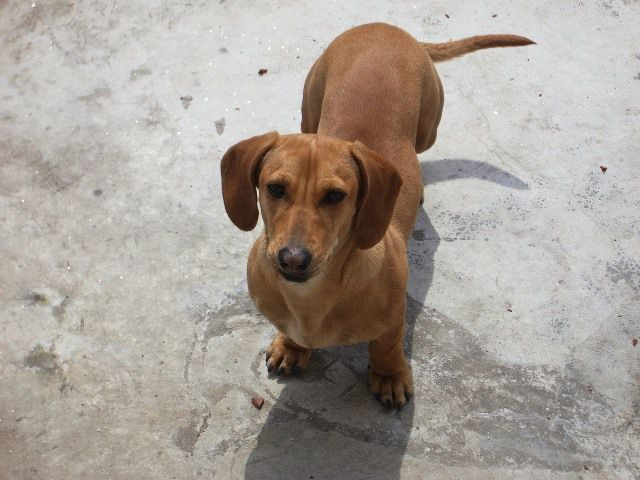
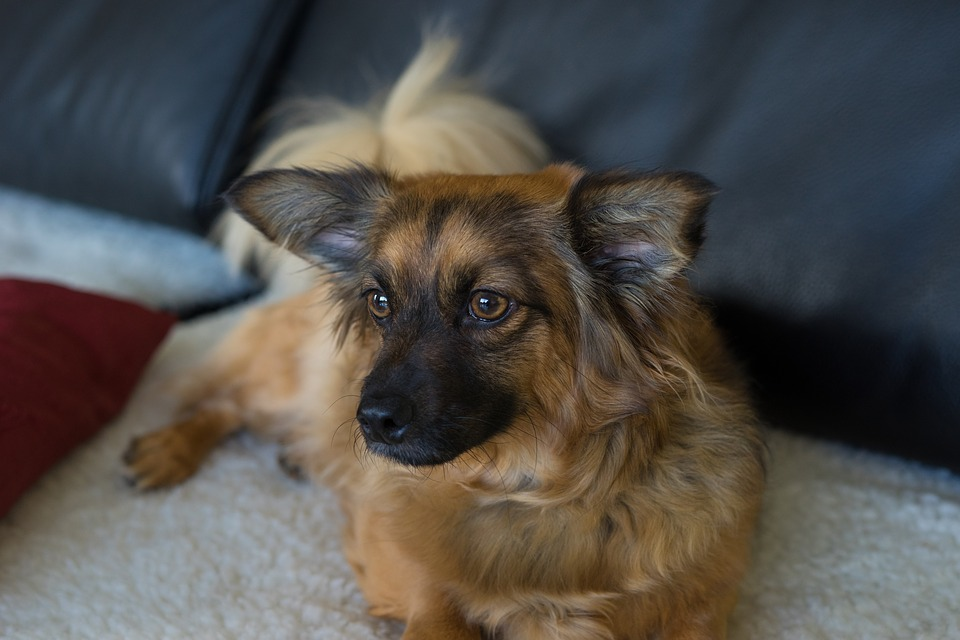

(mezcla salchicha)

| Nombre | Edad, animal y raza | Descripción y hábitos | Ubicación provisoria | Foto |
|---|---|---|---|---|
| Bobby | 1 año - Perro mestizo (mezcla salchicha) |
Cachorro juguetón encontrado hace varios meses, se lleva bien con otros perros (no con gatos), obediente y muy amoroso. | B° Jardín, Córdoba Capital |  |
| Lulú | 5 años - Gata mestiza | Lulú busca un nuevo hogar ya que su dueña no puede hacerse cargo de ella. Es muy tranquila y hace sus necesidades en bandeja sanitaria. | B° Nuevo Poeta Lugones, Córdoba Capital | |
| Daisy | 2 años - Perra mestiza | Cachorra tranquila y tímida busca hogar. Es de tamaño mediano. Ama los niños y los espacios amplios. Disfruta jugar al aire libre. | B° Nueva Córdoba, Córdoba Capital |  |